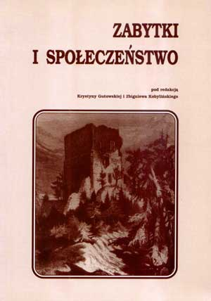

Zabytki i społeczeństwo

Zabytki i społeczeństwo. Czynnik społeczny
w ochronie zabytków w warunkach reformy samorządowej, red. Krystyna
Gutowska i Zbigniew Kobyliński. Warszawa 1999
Spis treści
Część
1. Konferencja "Czynnik społeczny w ochronie zabytków w warunkach
reformy samorządowej"
Zbigniew Kobyliński i Jan Tarczyński - Konferencja "Czynnik
społeczny w ochronie zabytków w warunkach reformy samorządowej"
Przemówienie prof. dr hab. Andrzeja Tomaszewskiego, Generalnego
Konserwatora Zabytków
Przemówienie pana Ryszarda Kaczorowskiego, b. Prezydenta Rzczypospolitej
Polskiej, rezydującego w Londynie
Przemówienie Senator Krystyny Czuby, Przewodniczącej Senackiej
Komisji Kultury i Środków Przekazu
Część
2. Dziedzictwo kulturowe jako wartość
Beata Witkowska-Maksimczuk - Dziedzictwo kulturowe -
rozważania aksjologiczne
Maria Łojewska-Krawczyk - Odpowiedzialność za dziedzictwo
kulturowe
Krystyna Gutowska - Zabytki w refleksji estetyka: piękno,
artyzm, wartość historyczna
Ewa Kozłowska - Przedmioty zabytkowe
Część
3. Rola edukacji w ochronie dziedzictwa kulturowego
Marek Barański - Świadomość a ochrona zabytków
Izabella Bukraba-Rylska - Lokalne zasoby kulturowe -
stan świadomości i społeczne inicjatywy
Zbigniew Kobyliński - Edukacja jako najważniejszy element
programu działań na rzecz ochrony zabytków
Agata Wójcik i Piotr Szpanowski - Jak uczyć opieki nad
zabytkami?
Krystyna Gutowska i Zbigniew Kobyliński - Podyplomowe
Studium Zarządzania Dziedzictwem Kulturowym
Część
4. Społeczne działania na rzecz ochrony dziedzictwa kulturowego
Andrzej Łojszczyk - Mecenat prywatny w ochronie zabytków
Christer Gustafsson i Jacek Wysocki - Hallandzki model
konserwacji zabytków i jego zastosowanie w Polsce
Franciszek Midura - Społeczna opieka nad zabytkami w
działalności Polskiego Towarzystwa Turystyczno-Krajoznawczego
Jerzy Chłopecki - Rola działaczy i ogniw PTTK w Marynarce
Wojennej RP w popularyzacji i ochronie zabytków militarnych
Jerzy Wąsiewski - Niektóre bieżące problemy społecznej
ochrony zabytków militarnych oraz próby ich rozwiązywania stosowane
przez Pomorski Oddział Fundacji Ochrony Zabytków Militarnych